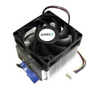
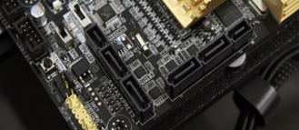

INTRODUCTION
A computer system consists of hardware and software components. As important as the software which are the programs that run the computer, the hardware is the physical equipment such as the case, storage drives, keyboards, monitors, cables, speakers, and printers that builds up and let the software run.
It is important to learn about these components as these will be the basis before you handle equipment especially in disassembling and assembling a computer system.
The complete computer made up of the CPU, memory, and related electronics (main cabinet), all the peripheral devices connected to it and its operating system.
Computer systems fall into two broad divisions: clients and servers.
Client machines fall into three categories from low to high end: laptop, desktop, and workstation.
Servers range from small to large: low-end servers, midrange servers and mainframes.
Processing Devices
Processing devices are the computer’s circuitry in the system unit.
Motherboard – the circuit board housing the memory and the central processing unit (CPU)
Central Processing Unit (CPU) – manipulates input data into the information needed by the users.
Memory – also known as Random Access Memory or RAM. It is a series of electronic elements that act as temporary storage of data and program instructions while the instructions are being processed by the CPU.
Chips - these make up the CPU and the memory; these are electronic devices that contain many microscopic pathways designed to carry electrical currents.
Storage Devices
Storage devicesstore data and programs. These hold data, information, and programs permanently.
Solid State Drive (SSD) - mass storage device that stores data in a permanent state even without power. Like an HDD’s function, only the internal components are different. SSDs do not have moving parts but store data on magnetic platters making use of flash memory.
Hard Disk Drive (HDD) - often called hard drive or hard disk. This is the most common storage device that do not need power to maintain data; these store data through spinning platters or magnetic disks, recording individual bits written into the disk.
Flash Drive - highly portable small data storage devices making use of flash memory and a Universal Serial Bus (USB) port connection
CD - “compact disc”, this storage device can hold up to 700 MB; it is read by an optical drive through a laser
Input Devices
Input devices store data and programs. These hold data, information, and programs permanently.
Keyboard - primary input device used to input alphanumeric data and commands to the computer.
Mouse - primary input device used to navigate and interact with the monitor output.
Scanner - scans documents and converts them digitally, which can be edited on a computer.
Webcam - small cameras attached to a monitor or desk that record or broadcast video.
Joystick - device used to control video games, aside from the keyboard.
Output Devices
Output devices enable the computer to show the processed data and information understandably to the user.
Printer - prints paper documents, photographs, and other outputs called hard copies which are physical versions of the documents.
Monitor - acts as the primary display of the unit where the user interface and programs are reflected.
Speaker - sound system device that produce audio output from the computer.
The System Unit
The System Unit is the overall structure that houses the processor, memory, and electronic components of the computer that are used to process data. All input and output devices are connected into the system unit. The system unit is housed by what is known as system case or computer case. It holds and protects most components of a computer.
The Computer Case contains the framework to support and enclose internal components of the computer. It helps to prevent damage from static electricity. It typically made up of plastic, steel, and aluminum which are available in a variety of styles. The size and layout of a case is called a form factor.
. It is also designed to keep internal components cool by using airflow vents and cooling fans.
Computer cases are referred to in several ways:
Computer chassis, Cabinet, Tower, Box and Housing.
- Type:
- Tower (Full, Mid, Mini)
- Desktop (Standard, Slimline)
Power Supply
Power Supply serve as the source for electricity to the computer. Attached are vital hardware cables and buses for transferring power to various components in the computer.
The following are the basic connector you can see in a power supply:
- ATX 24 pin main power connector - is the standard motherboard power connector used in nearly every computer.
- SATA 15 pin power supply connector - is one of several standard peripheral power connectors. SATA power connectors only connect to SATA drives like hard drives and optical drives. SATA power connectors do not work with older PATA devices.
- Molex 4 pin power supply connector - is a standard peripheral power connector. Molex power connectors connect to many kinds of internal peripherals including PATA hard drives and optical drives, some video cards, and even some other devices.
- Floppy drive 4 pin power supply connector - is the standard floppy drive power connector. The floppy power connector, also called a Berg connector or Mini-Molex connector, is included in even the newest power supplies even though floppy drives are becoming obsolete.
- ATX 4 pin power supply connector - is a standard motherboard power connector used to provide +12 VDC to the processor voltage regulator. This small connector usually attaches to the motherboard near the CPU.
- ATX 6 pin power supply connector - is a motherboard power connector used to provide +12 VDC to the processor voltage regulator but the 4-pin variety is the more commonly used connector. This small connector usually attaches to the motherboard near the CPU.
Motherboard
The motherboard is also known as mainboard, system board, logic board, or MOBO. It holds and allows communication between the crucial components of the computer such as the CPU and memory. It also provides connection for other peripherals. This provides the path which the processor (CPU) communicates with all the components of the computer.
There are several components that are attached to the motherboard. These include:
- Chip - small piece of semiconducting material, where more integrated circuits are embedded. They have standard-sized pin connectors that allows them to be attached to the motherboard.
- Bus - an electrical path that enables data flow between various system components.
- Integrated Circuit (IC) - contains microscopic pathways that carry electric current. The IC contains millions of elements such as resistors, capacitators, and transistors. Many kinds of chips are located in the motherboard
- Microprocessor - this is the central processing unit on a chip.
Different variety of chip packages:
- Dual Inline Package (DIP) - this has two parallel rows of pints that attach the chip package to the circuit board
- Pin Grid Array (PGA) - holds a larger number of pins because the pins are mounted on the surface of the package.
- Flip Chip-PGA (CF-PGA) Package - higher performance PGA packaging that places the chip on the opposite sides of the pins.
- Single Edge Contact (SEC) Cartridge - does not use pins but connects to one of the edges in the motherboard.
The form factor of motherboards pertains to the size and shape of the board. It also describes the physical layout of the different components and devices on the motherboard. Various form factors exist for motherboards:
- AT - Advanced Technology
- ATX - Advanced Technology Extended
- Mini-ATX - Smaller footprint of ATX
- Micro-ATX - Smaller footprint of ATX
- LPX - Low-profile Extended
- NLX - New Low-profile Extended
- BTX - Balanced Technology Extended
The function of the northbridge is primarily a fast path between the CPU and the video bus and system RAM. While the southbridge connects with the slow hardware/components of the system.
See the photo below (courtesy of Quora) to understand the function of these bridges:
Central Processing Unit (CPU)
Commonly known as the CPU or processor, this is the brain of the computer. It interprets and carries out the basic instructions to operate a computer.
It impacts overall computing power and manages most of the computer operations. The motherboard contains a socket to hold the processor or CPU. The central processing unit (CPU),also called the processor or microprocessor, does most of the processing of data and instructions for the entire system. Because the CPU generates heat, a fan and heat sink might be installed on top to keep it cool.
Nowadays, processors have multiple cores called multi-core processors.This means that the processor is a single chip that has two or more separate processors. In multi-core processors, each of the processors run at a slower clock speed as compared to a single-core processor, but this efficient process typically increases performance. There are two kinds of common multi-core processors today:
- Dual Core Processor - chip that contains two separate processors
- Quad Core Processor - chip with four separate processors
AMD and Intelare the two most popular brands of processors in the market nowadays.
Bundled with the processors are the heat sinks. A heat sinkconsists of metal fins that draw heat away from a component. The fan and heat sink together are called the processor cooler. The photo below shows a CPU with a heat sink mounted on the motherboard.
Random Access Memory (RAM)
The Random Access Memory or RAM acts as temporary storage as long as the computer is running. The contents of the RAM change as programs are executed. These are chips that are placed directly on the motherboard. These RAM consists of switches which are triggered by changes in electric current.
Three basic types of RAM:
- Dynamic RAM (DRAM) - This kind of RAM needs to be recharged by the CPU. If not, it loses its contents. There are many variations of DRAM such as:
- Synchronous DRAM (SDRAM) – faster than DRAM because it is synchronized to the system clock
- Double Data Rate (DDR) SDRAM – faster than SDRAM because they transfer data twice for each clock cycle
- DDR2 and DDR3 SDRAM – faster than DDR SDRAM
- d. ambus DRAM (RDRAM) – type of DRAM faster than SDRAM that uses pipelining techniques
- Static RAM (SRAM) – This kind is faster and more reliable than any form of DRAM. Unlike the DRAM, this does not need to be re-energized. However, it is much more expensive, and it used for special purposes.
- Magnetoresistive RAM (MRAM) – This kind stores data using magnetic charges instead of electrical charges. It has greater storage capacity, consume less power, and faster access times.
The RAM chips are housed in a small circuit board called the memory module, which is inserted into the motherboard.
Three types of memory modules:
- Single Inline Memory Module (SIMM) – this has pins on opposite sides of the circuit board which connect to form a single set of contacts. This houses SDRAM chips along with DIMMs.
- Dual Inline Memory Module (DIMM) – the pins on the opposite sides of the circuit board do not connect and form two sets of contacts. This houses SDRAM chips along with SIMMs.
- Rambus Inline Memory Module (RIMM) – this houses RDRAM chips
The computer will need a certain amount of memory to be able to handle programs, data, and information, depending on the types of applications used.
The more RAM a computer has, the faster the computer will be.
To be able to use basic application software such as Office Suite, one needs at least 1GB of RAM.
Using programs and multimedia should have at least 4GB.
Playing modern games or using editing software will require at least 8GB.
Today the RAM ranges up to 64GB depending on the programs that will be used for the computer.
Cooling Technology
Cooling technologies are essential in avoiding the computer from overheating and maintaining a good, well-ventilated system.
Chassis Fan
Several cooling technologies are present throughout the system unit:
- Fans are also present in several components such as the power supply, ports, processor, hard disk etc.
- Heat sink, on another hand, is a small metal or ceramic component with fins on the surface which absorbs and distributes heat produced by electrical components.
- Heat pipe is used on smaller devices like notebook computers since this is smaller in size.

Heat Sink
Expansion Cards
A motherboard has expansion slots to be used by expansion cards. An expansion card,also called an adapter card, is a circuit board that provides more ports than those provided by the motherboard.
The photo below shows a Video Card, where it provides three video ports. Notice the cooling fan and heat sink on the card, which help to keep the card from overheating. The trend today is for most ports in a system to be provided by the motherboard (called onboard ports) and less use of expansion cards.
Expansion Cards
A system might have one or more hard drives, an optical drive, a tape drive, or, for old systems, a floppy drive.
A hard drive, also called a hard disk drive (HDD), is permanent storage used to hold data and programs.
Heat Sink
For example, the Windows operating system and applications are installed on the hard drive. All drives in a system are installed in a stack of drive bays at either the front or on the lower portion of the case. Nowadays, users use Solid State Drive or SSDs because of its use of flash memory, which does not use physical disks to write memory/data.
Solid State Drive
Each drive has two connections for cables: the power cable connects to the power supply and another cable, used for data and instructions, connects to the motherboard.

SATA Cable // SATA Connector Slot in the Motherboard
Ports, Sockets, Slots,& Connectors
The motherboard has several ports, sockets, slots, and connectors that link the computers' components, input, and output devices among each other. First, we'll look at the port which are usually found at the side of the motherboard or the back of the system case.
The port basically serves as an interface between the computer and other computers or peripheral devices.
A port generally refers to the female part of connection. Computer ports have many uses, to connect a monitor, webcam, speakers, or other peripheral devices.
On the physical layer, a computer port is a specialized outlet on a piece of equipment to which a plug or cable connects. Electronically, the several conductors where the port and cable contacts connect, provide a method to transfer signals between devices.
Familiarize yourself with the following ports usually found with computer systems below:

Sockets
The following are the most common sockets found in the motherboard. The CPU socket where the CPU itself is inserted and the CMOS slot where the CMOS battery (which lets the motherboard remember the date and time of the computer) that is replaced after it has worn out.